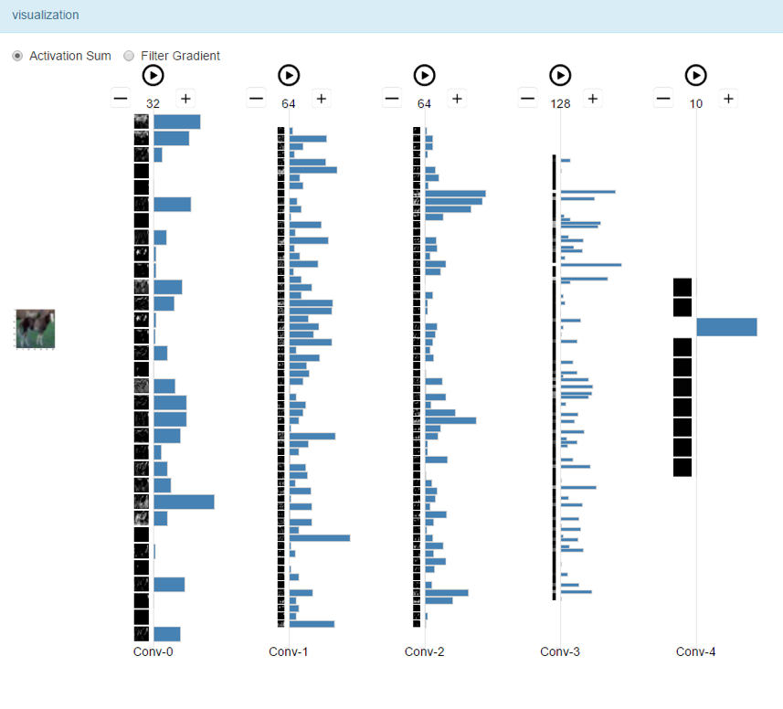
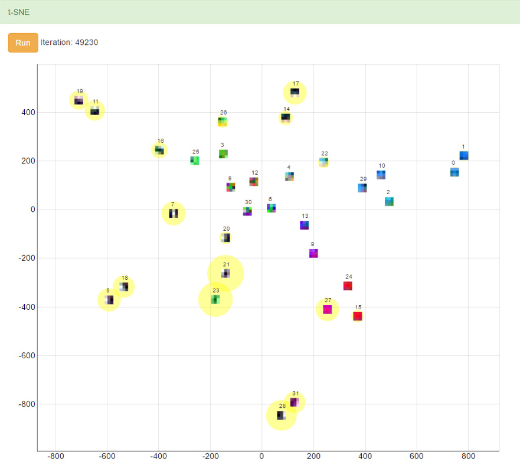
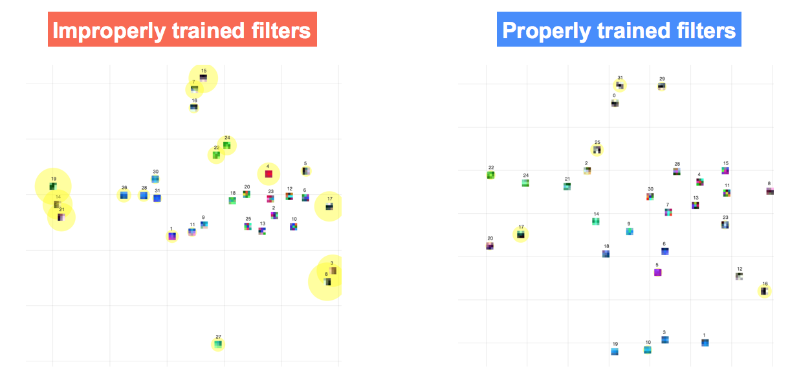
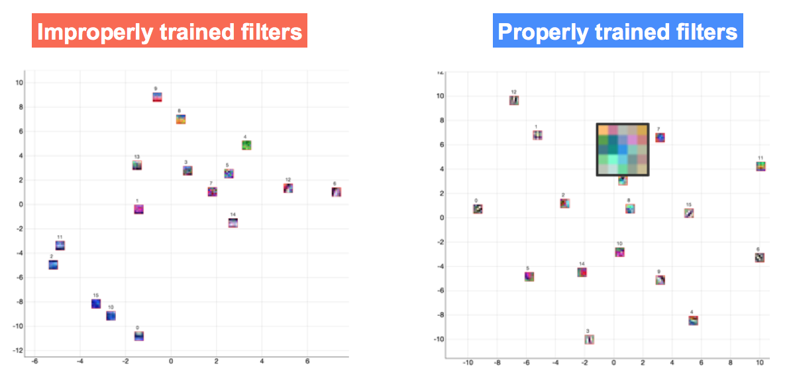
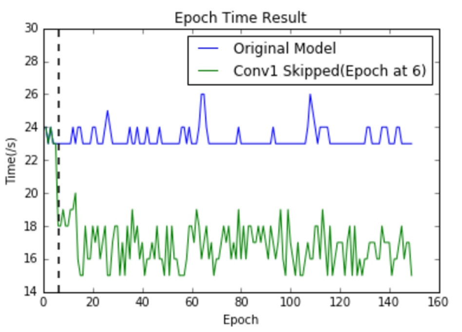
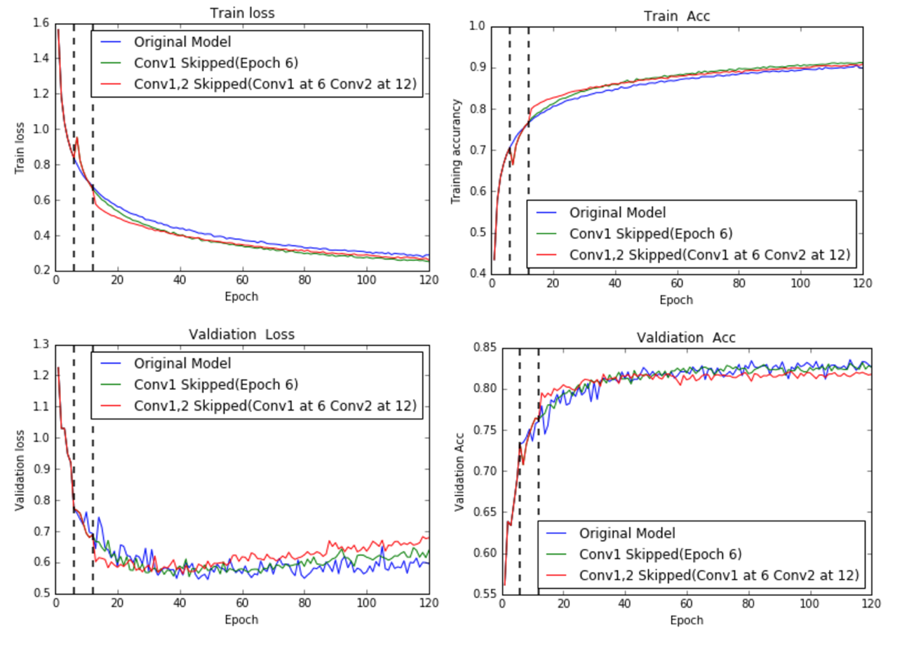
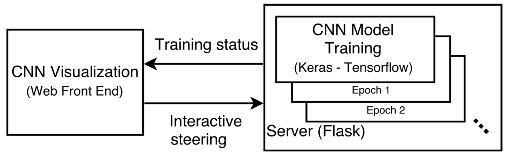

ReVACNN: Steering Convolutional Neural Network via Real-Time Visual Analytics
Sunghyo Chung, Cheonbok Park, Sangho Suh,
Kyeongpil Kang, Jaegul Choo, Bum Chul Kwon
Korea University, IBM T.J. Watson Research Center
Introduction
Problem
- While significant achievements have been made by deep learning, the understanding of underlying processes behind it's model received less examination.
- Training deep learning is a time consuming task that requires repetitive model selection and hyper-parameter tuning.
- Deep learning models are prone to underfitting, overfitting
Introduction
Solution approach
- Our solution to this problem is to provide Real-time visualization + Dynamic model steering
- Training deep learning is a time consuming task that requires repetitive model selection and hyper-parameter tuning.
- Deep learning models are prone to underfitting, overfitting
Network visualization

- Provides an overview of the activation of filters in layers
- Images represent the activations for the given input image
- Filters can be easily added or deleted in the hidden layer with simple interactions
- Users can selectively “freeze” particular nodes/layers to reduce the training time
Filter-level 2D embedding visualization

- Users can selectively “freeze” particular nodes/layers to reduce the training time
- t-SNE view provides users with the capabilities of node-level as well as layer-level exploration.
- Filters are shown as images and along with the circle showing the degree of convergence as the total sum of the gradients over the last epoch.
Usage scenarios
Cluster pattern

A model with filters belonging to a particular cluster tends to have low accuracy while well-trained model shows no cluster pattern.
Usage scenarios
RGB pattern

For the first convolutional layer, a model with filters showing single color channel tends to have low accuracy while well-trained model usually contains all three color channels.
Usage scenarios
Freezing layers
-
Freezing layers skip the gradient descent update and enable satisfactory reduction of training time without significant loss in performance.

Epoch series of original model and Conv1 Skipped (Epoch at 6) model on CIFAR-10 dataset.
Vertical dotted line denotes a particular epoch for layer freeze.
Conclusion
Summary
- ReVACNN is a real-time visual analytics system for a convolutional neural network.
- Supports exploring and steering the network by visualizing its layers and nodes.
- Provides a filter-level 2D embedding view by applying t-SNE to various filter information.
Conclusion
Future work
- Extend to visualize larger model(Residual network), add more interactive steering features.
Thank you
Q & A
sh31659@gmail.com
sanghosuh.github.io
Appendix
Freezing layers
- Comparison between original model and two Freeze Layer models on several measures. Freeze Layer models demonstrate faster convergence with near-equivalent performance. In particular, validation set accuracy is almost the same. Each graph’s vertical dotted line denotes the epoch in which freeze layer occurs.

Appendix
Demo
Javascript version of ReVACNN demo is available at the link below.
- http://sunghyo.github.io/kdd_net/convnetjs/demo/cifar10_vis.html
Open source
ReVACNN is an open source project available at github.
- https://github.com/Sunghyo/revacnn (Tensorflow - Keras version)
- https://github.com/davianlab/deepVis (Javascript version)
Workshop paper
- ACM SIGKDD Workshop on Interactive Data Exploration and Analytics (KDD-IDEA), 2016, San Francisco, CA (http://poloclub.gatech.edu/idea2016/papers/p30-chung.pdf)
- FILM at NIPS - Future of Interactive Learning Machines Workshop, 2016, Barcelona, Spain (http://www.filmnips.com/accepted-papers/)
Appendix
Implementaion details

- The system consists mainly of web front end and server backend.
- The server, which consists of flasks, is connected with deep learning framework, through which trains model in real time and sends the training status to visualization and through which, provides interactive steering.